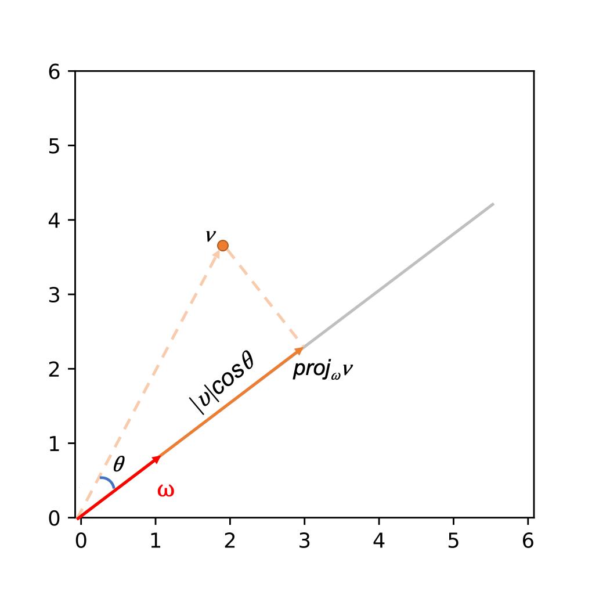
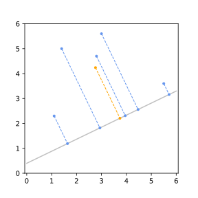
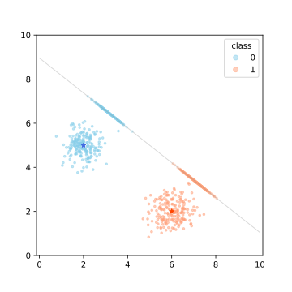
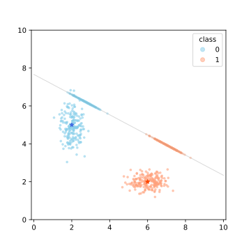
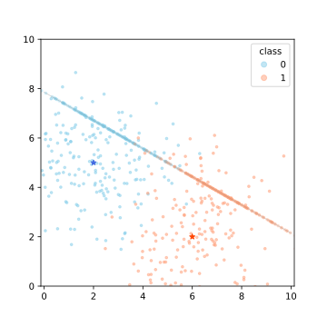
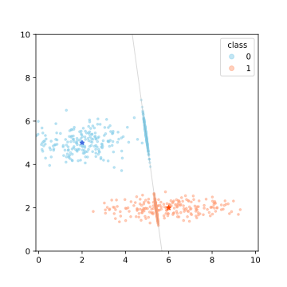
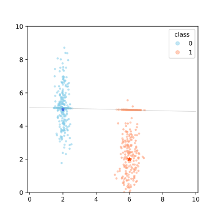
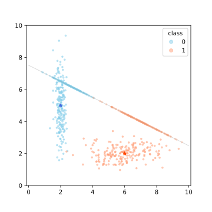
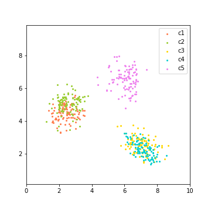

Overview
Linear discreminant analysis (LDA) is a supervised algorithm
widely used method in classification and dimension reduction. In this
article, we will walk through the main idea of LDA, get to know how it
works and find out some of its properties and regularities.
Prerequisites
To fully grasp the idea of this explanatory article, you should have
a basic understanding in linear algebra, calculas and probability
theory.

An important idea in LDA is projection. The projection of a vector $x$
onto another vector $\omega$ is defined as
$$ proj_{\omega}x =
\left(\frac{\omega^{T} x}{\omega^{T} \omega}\right) \omega $$
In a two dimensional space, this can be viewed as the component
of one vector explained in the direction of the other, and the
actual amount of this portion, a scalar value $a$ in this direction,
is determined by
$$a = \frac{\omega^{T} x}{\omega^{T} \omega}$$
For example, in the graph on the right,
vector $\nu$ is projected onto vector $\omega$, which is represented by
the solid line paralle to $\omega$. The value of projection is relevent to
both the length of vector $\nu$ as well as the angle between the two vectors.
In the figure below, you can scroll to see the projection of a point onto
different lines.

LDA cares about two distances: within-class distance and between-class
distance. In this section, we only discuss the condition of a two
dimensional LDA problem on two classes.
Maximize between-class distance
The goal of LDA is to find a line that best distinguish the two
different classes when the data are projected onto this line.
To measure the distinction between the two classes, we first find the
projection of the mean value for each class. Suppose the two classes
are labelled by $y = 0$ or $y = 1$, and each $x_i$ represents a 2-D
vector. For each class, the mean is
defined as
$$ \mu_i = \frac{\sum_{k=0}^{n_i}x_k}{n_i}\text{, } i = 0\text{ or }1$$
and the projected value of the mean point onto a line represents by a unit
vector $w$ ($|w| = 1$) is
$$ m_i = \frac{\omega^{T} \mu_i}{\omega^{T} \omega} = \omega^{T} \mu_i$$
The distance of the two classes under this projection is determined by
$$ |m_1 - m_2|$$
and in order to distinguish the two classes, we want to maximize this
value.
Minimize within-class distance
In the meantime, we also want to minimize the distances within a class \(C_i\),
so that points of two different classes don't overlap. This is measured
by within-class variance:
$$
s_{i}^{2}=\sum_{x_{k} \in C_{i}}\left(a_{k}-m_{i}\right)^{2}
\text{, } i = 0\text{ or }1
$$
Notice that here $a_k$'s and $m_i$ are all projections of points
onto a line $l$ represented by a direction vector $w$. The intercept of
the line is not considered, because it's irrelevant to the two distances
discussed above.
Our goal is to maximize $|m_1 - m_2|$ as well as minimize
$s_1^2+s_2^2$. We can combine them into one optimization problem as
$$
\max _{w} J(w)=\frac{\left(m_{1}-m_{2}\right)^{2}}{s_{1}^2+s_{2}^2}
$$
this is known as Fisher's LDA. Since
\(m_i = w^T\mu_i\),
$$(m_1 - m_2)^2 = (w^T(\mu_1-\mu_2))^2 = w^T(\mu_1-\mu_2)(\mu_1-\mu_2)^Tw
$$ denote $B = (\mu_1-\mu_2)(\mu_1-\mu_2)^T$, $B$ is a $2\times 2$ matrix
known as the between class scatter matrix.
Similarly,
$$
s_{i}^2 = \sum_{x_{k} \in C_{i}}\left(a_{k}-m_{i}\right)^{2}
= \sum_{x_{k} \in C_{i}} (w^Tx_k - w^T\mu_i)^2
= w^T\left(\sum_{x_{k} \in C_{i}}(x_k - \mu_i)(x_k - \mu_i)^T\right)w
$$
Let $$S_i = \sum_{x_{k} \in C_{i}}(x_k - \mu_i)(x_k - \mu_i)^T$$ and denote the
sum of within-class scatter matrix as
$$S = s_1^2 + s_2^2 = S_1 + S_2$$
we can rewrite our optimization function as
$$ \max _{w} J(w)=\frac{w^TBw}{w^TSw}.
$$
Recall that in calculus, the maximum value of a convex function is attained when its
derivative equals zero. Qualitatively, we know that the numerator and denominator
are both convex, and as the numerator increases, the denominator decreases. Therefore a
maximum exists for our objective function.
You can also scroll the slider below this graph to figure out how within-class variance
and between-class variance changes as the direction $w$ of the projected line changes.
LDA works when the measurements made on independent variables for each
observation are continuous quantities. It is quite sensitive to outliers
and the size of the smallest group must be larger than the number of predictor
variables. It works best if the data are randomly sampled from independent
variables, and the classes follow multinormal distribution. Besides, the
predictive power of LDA decreases as correlation between predicted variables
increases.
For example, as shown in the figures below,






the mean value of class 1 and class 2 (marked by the stars) remained the
same in all 6 graphs, but the covariance matrices are different. The variance
and skewness of the distributions result in the differences in the discriminant
functions.
For two classes with fixed distributions, as we increase the sample size, the
discriminant function will converge to some fixed value, which is determined by
the covariance matrices of the two distributions.
You can scroll the slider to see how the swing amplitude of discriminant
line reduces as sample size increases:
If you are interseted, you may check the following exercises to see
whether you have understood LDA.
1. The goal of linear discriminant analysis is to
2. What is the objective function for LDA's optimization?
3. Would you consider using LDA for classifying the following data?
